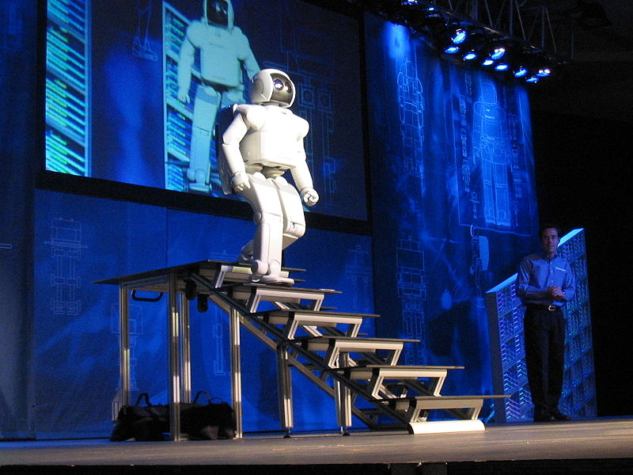

In the early 1980s, AI research saw a new awakening through the commercial success of "expert systems", which is one of the AI programs that simulates the knowledge and analytical skills of one or more human experts. By 1985 the profits of artificial intelligence research on the market had reached more than $ 1 billion, and governments had started funding again. A few years later, beginning with the collapse of the Lisp Machine market in 1987, AI research saw yet another setback, but longer.
In the 1990s and early 2000s, AI has had greater successes, albeit somewhat behind the scenes. Artificial intelligence is used in logistics, data mining, medical diagnostics and many other areas throughout the technology industry. This success is due to several factors: the great power of computers today (see Moore's Law), an increased focus on solving specific sub-problems, and creating new relationships between the field of artificial intelligence and other areas of work in similar problems, and above all, researchers began adhering to strong mathematical approaches And strict scientific standards.
